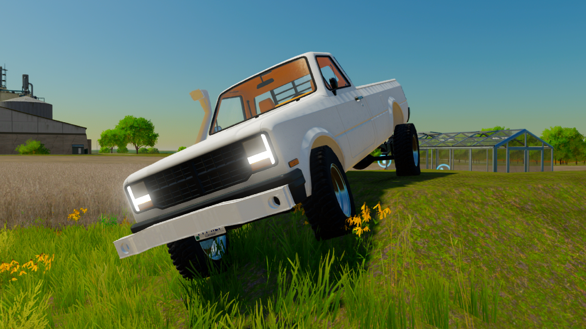
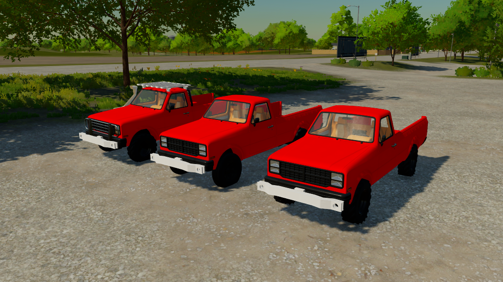
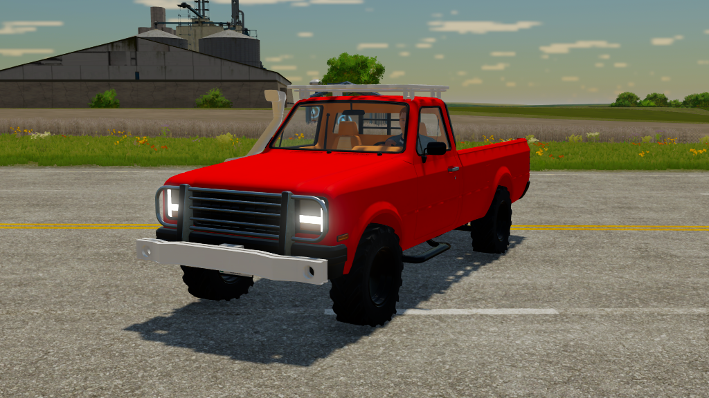
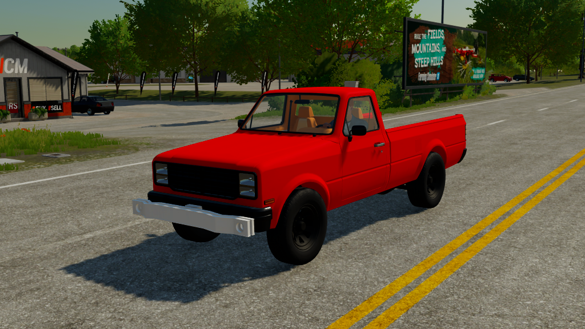

Projects
Contact
Mod States List
Bug Repair List
↗ModHub
↗Linktr.ee
Farm Mods TV
'86 Pickup Revolution
Project Type: New Mod
Create Date: 28.01.2024
Estimated Publish Date: March 2024
-- Not Defined --
Check Mod States
 
 